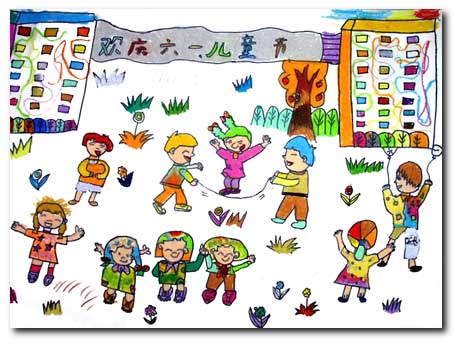
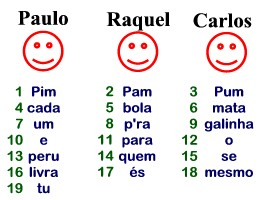

Se submeter no Mooshak, deverá submeter uma
classe ED006 contendo um programa completo para resolver o
problema (ou seja, com o método main).
Pode assumir que no
Mooshak terá acesso às classes Node<T>
e CircularLinkedList<T> como dadas nas aulas (ou seja,
não precisa de as incluir no código submetido).

"Pim, Pam, Pum, cada bola mata um, p'ra galinha e para o peru quem se livra és mesmo tu"Quem não se lembra de ter feito este jogo quando era pequeno? A ideia é muito simples. A frase atrás descrita tem 19 palavras:
"Pim, Pam, Pum, cada bola mata um, p'ra galinha e para o peru quem se livra és mesmo tu" 1 2 3 4 5 6 7 8 9 10 11 12 13 14 15 16 17 18 19
3 crianças resolveram jogar este jogo, o Paulo, a Raquel e o Carlos, que estão dispostas por esta ordem. O Paulo começa a dizer a frase, e em cada palavra vai apontando para as pessoas. Ao chegar ao fim da lista de pessoas, volta ao início, a ele mesmo, como exemplificado.

Quem se livrava no início era o Paulo. Agora imagina que o jogo continuava. A pessoa que se livrou sai da lista, e a contagem recomeça na próxima pessoa (neste caso a Raquel). Quem se livrava a seguir era a Raquel e o Carlos, coitado, era o que não se livrava.
Descontente com isto, o Carlos, sabendo que és um bom programador, resolveu pedir-te ajuda. O que ele quer saber é, dada uma configuração inicial, se ele irá perder o jogo. O pior é que ele não sabe que frase vai ser usada. Por vezes e aquela frase comprida, outras vezes é uma mais pequena (como por exemplo, "Pim, Pam, Pum, quem se livra és tu", que neste caso teria 8 palavras). Podes ajudá-lo?
A primeira linha contém um número N indicando o número de casos a analisar-
De seguida vêm N casos, cada um definido por duas linhas:
Podes assumir que um dos nomes (que são sempre formados por uma única palavra)
será sempre "Carlos" e que a frase será apenas constituída
por letras (maísculas ou minúsculas, mas sem acentos) e espaços (para efeitos de contagem, uma palavra é uma sequência
de caracteres delimitada por espaços ou mudanças de linha).
"O Carlos nao se livrou", indicando que o Carlos perde o jogo
"O Carlos livrou-se (coitado do NomeX!)", onde NomeX indica a pessoa que perde o jogo.
| Input | Output |
|---|---|
2 Pim Pam Pum cada bola mata um pra galinha e para o peru quem se livra es mesmo tu 3 Paulo Raquel Carlos Pim Pam Pum quem se livra es tu 4 Fernando Eduardo Pedro Carlos |
O Carlos nao se livrou O Carlos livrou-se (coitado do Pedro!) |
Conteúdo de Fernando Silva (DCC/FCUP), migrado de dcc.fc.up.pt/~fds/aulas/EDados/2526/praticas/problems/prob006.html.